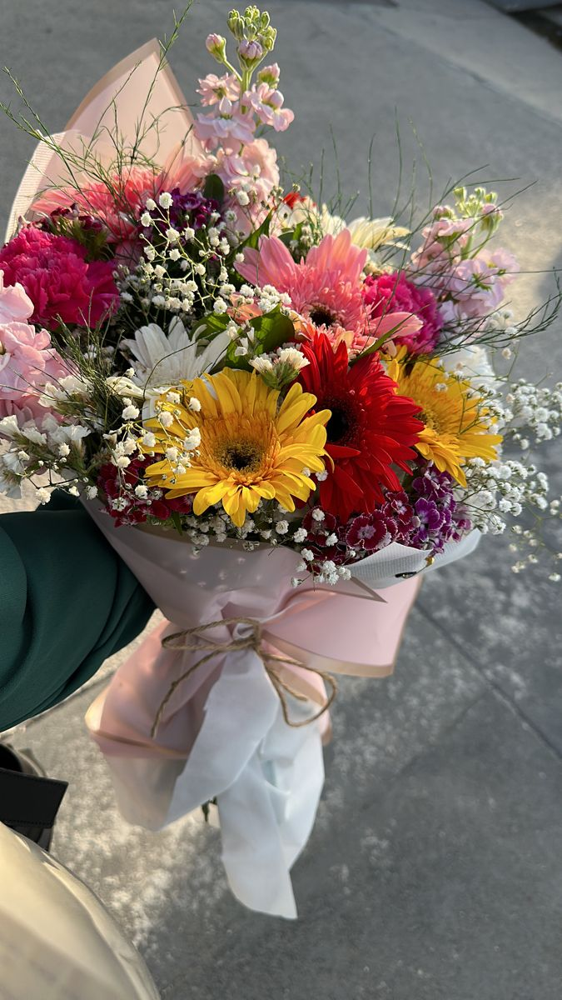
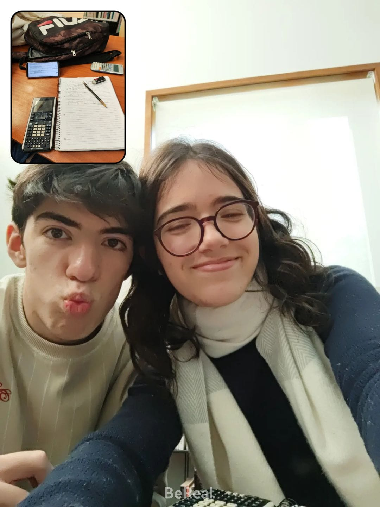
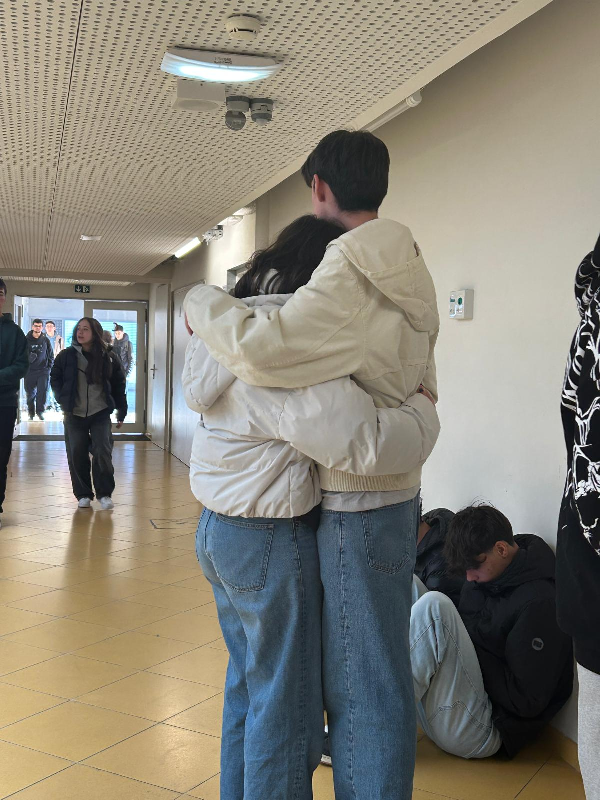
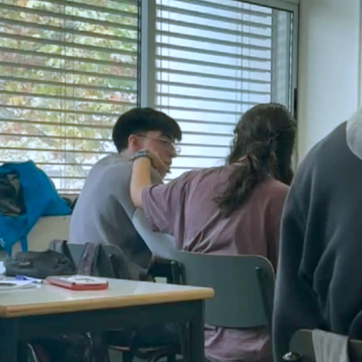
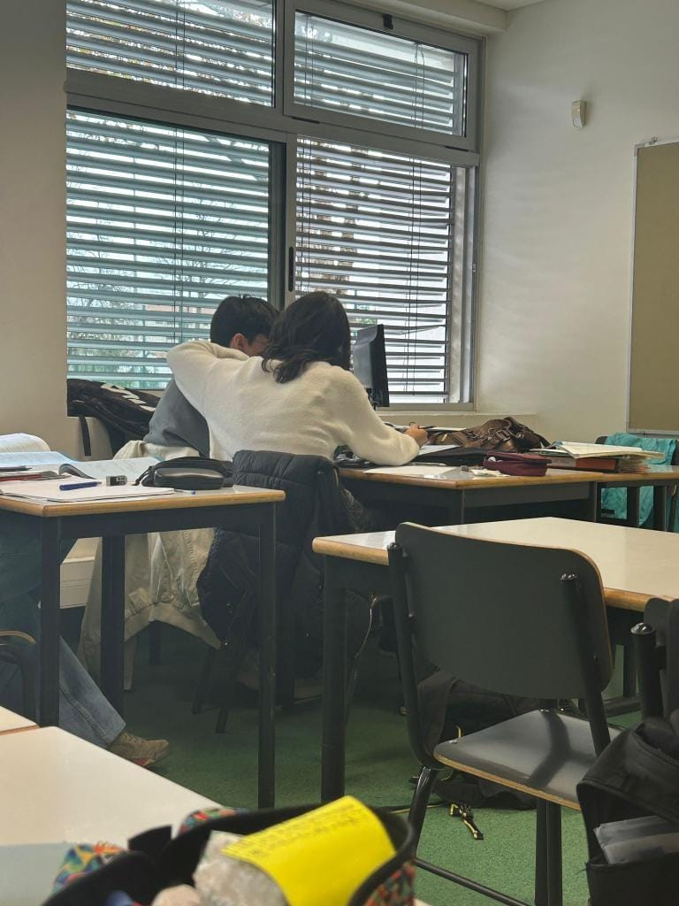
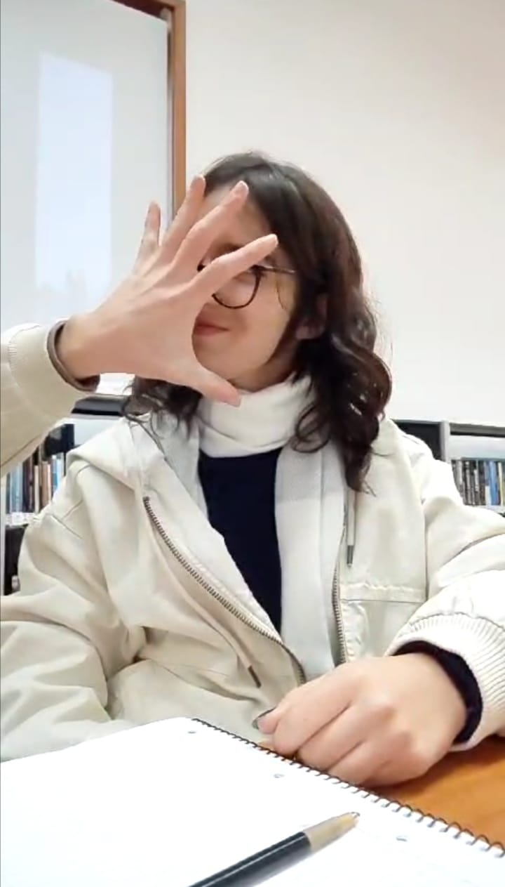
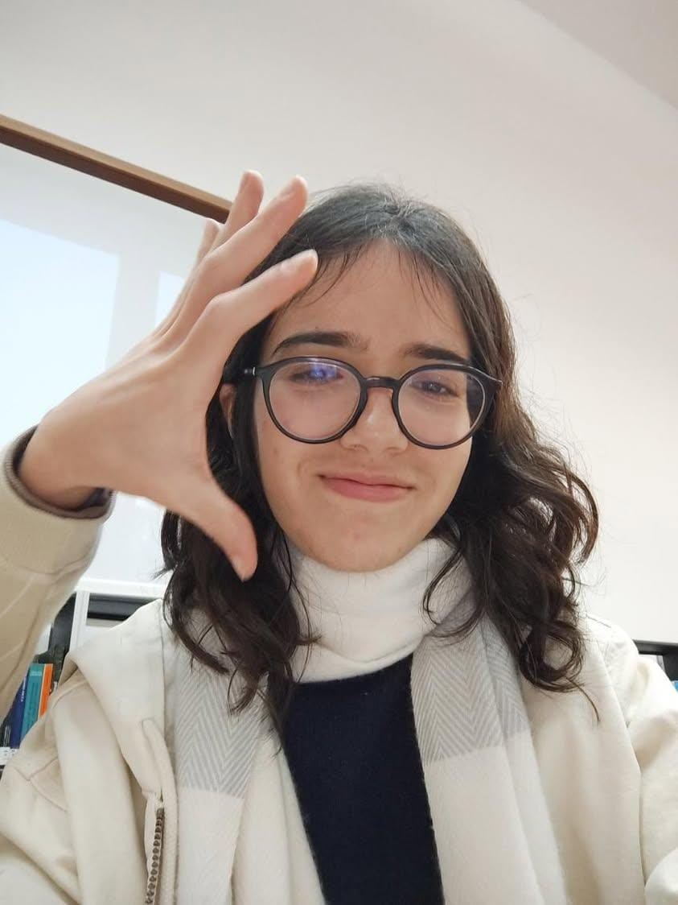
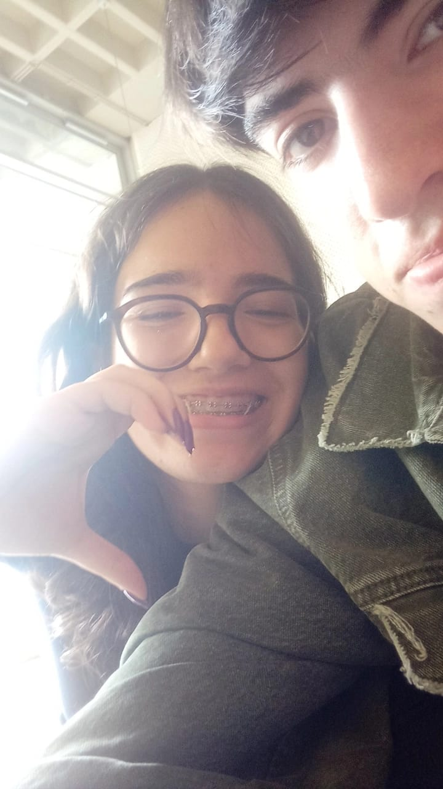
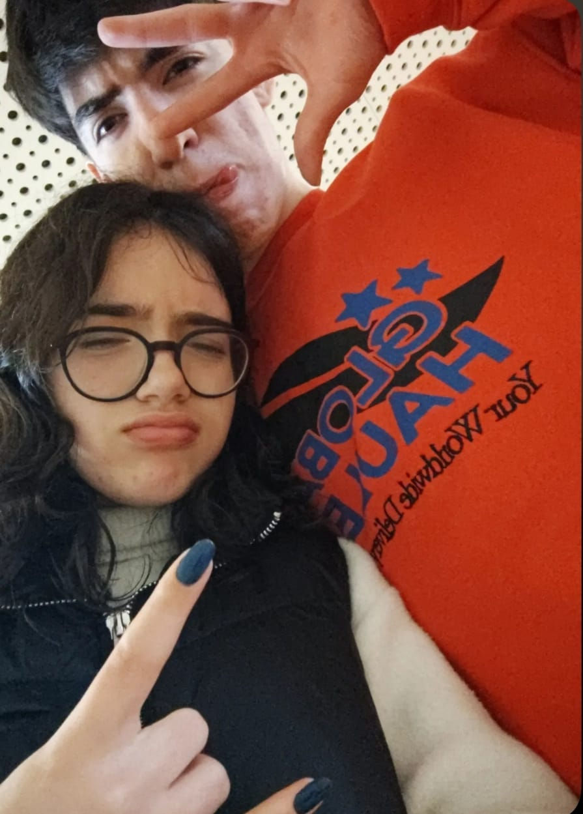

Para o meu amor lindo
Antes de tudo, eu queria dizer que queria ir mesmo comprar umas flores pra ti mas não consegui baby 😭
Então fiz este presente que eu espero que gostes. Espero que gostes destas flores digitais que serão eternas(se o dominio do site não for abaixo 😭) Enfim, não penses que gastei tanto tempo nesta surpresa, porque foi relativamente rápido(fiz isto de noite).
Amor, um sentimento tão dificil de explicar e que pode ser muito confuso. Pelo menos eu não sabia o que era amar até te conhecer. A minha visão de como o ser humano consegue amar realmente mudou completamente, contigo eu sou uma pessoa que eu nunca sonhei que pudesse ser para alguém, sou precisamente: eu. Contigo consigo falar de absolutamente tudo, nunca mas NUNCA tive desconfortável contigo por perto. É surreal pra mim, porque é realmente algo que eu pensei que fosse impossível de acontecer, nunca me quis dedicar a alguém, mas contigo é absolutamente diferente. Quero estar contigo, quero falar contigo, quero fazer qualquer coisa contigo, quero olhar para ti… eu realmente quero-te inteiramente. Eu sempre fui horrível com palavras e muito mais em explicar sentimentos, cresci uma pessoa fria que não sabe demonstrar sentimentos na cara, que não consegue comunicar os seus desafios com ninguém, bem… excuso dizer que contigo é BASTANTE diferente, é como se fosses parte do meu pensamento, alma, espírito, consciência… é como realmente fizesses parte de mim. Uma parte de mim que, sinceramente, sempre soube que faltava em mim. Engraçado como no primeiro dia que falei contigo parecia que tinha sido um dia normal com o amor da minha vida, parecia mesmo… um reencontro. Reencontro este que mudou por completo a minha vida.
There must have been an angel by my side
Something heavenly led me to you
Look at the sky
It's the colour of love
É simplesmente incrível a nossa ligação. Literalmente a nossa primeira interação foi interlinked, exatamente no momento que peço o horário ao Jota chega uma notificação tua... É muito incrível ver o que o universo trabalhou para nos unir. Tenho a certeza que a nossa ligação sempre prevalecerá, és literalmente o meu complementar. Sem falar dos meus sonhos sobre ti, que tornam-se sempre realidade. Os abraços... OS ABRAÇOS... a maior cura para tudo, simplesmente perfeitos, celestiais.
It will always be you and me, forever be, eternally.
O nosso olhar... não preciso de dizer muita coisa.
The look of love
Pois é baby... Vamos ter que enfrentar muitos desafios, mas não nos podemos distanciar mais. Enfrentaremos os desafios juntos, ultrapassaremos todos os traumas e dificuldades que no final tudo compensa. Temos ainda bastante a aprender e tou disposto a passar tudo o que for preciso para aprender e no final poder estar contigo. E sempre que penso que por tudo o que passamos e acabamos por voltar, fico fascinado em como estamos simplesmente conectados... E fico tão contente e orgulhoso sempre que penso no grande passo que deste ao desabafar tudo comigo baby.
Wherever you're going, Im going that way(the same)
Eu sinceramente acho que juntos temos a melhor estética deste planeta, combinamos perfeitamente.
  Sim, amo-te infinitamente e não consigo fingir demência 😭. Não podia acabar este presente sem dizer isto. Espero que um dia os nossos filhos possam ver isto e dizer "ui o pai era mesmo romântico", sim Olívia tem que ser, olha pra tua mãe, mulher linda inteligente e poderosa.
I thought that I was dreamin' when you said you loved me.
Deixei mais uma surpresa aqui no final, espero que gostes.
Clica aqui babyCom muito amor da pessoa que mais te ama:
Nuno Martinho
12/03/2025